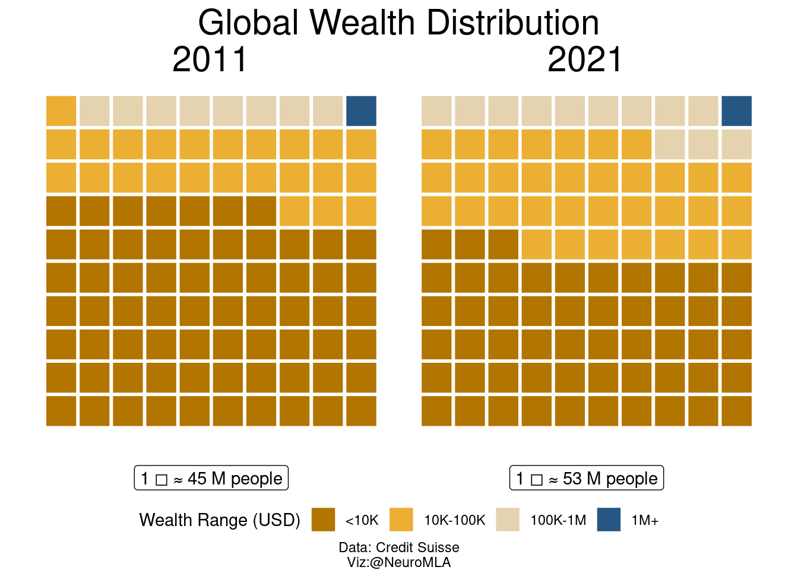
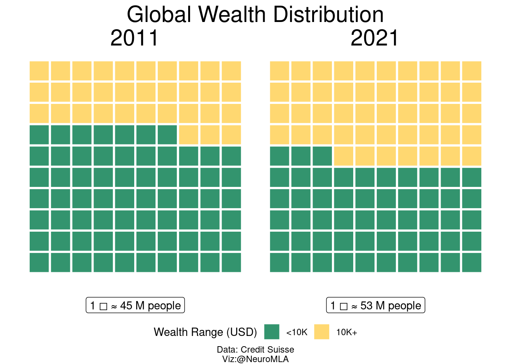
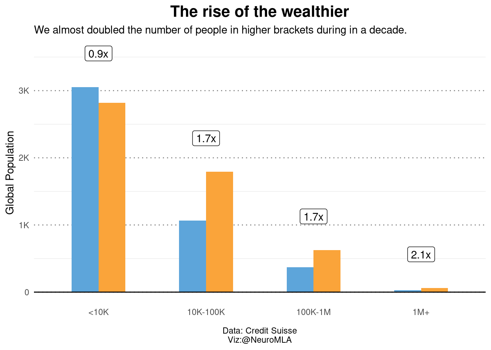

![]()
| Bracket | Bracket2 | Year | People (M) |
|---|---|---|---|
| <10K | <10K | 2011 | 3054.0 |
| <10K | <10K | 2021 | 2818.0 |
| 10K-100K | 10K+ | 2011 | 1066.0 |
| 10K-100K | 10K+ | 2021 | 1791.0 |
| 100K-1M | 10K+ | 2011 | 369.0 |
| 100K-1M | 10K+ | 2021 | 627.0 |
| 1M+ | 10K+ | 2011 | 29.7 |
| 1M+ | 10K+ | 2021 | 62.5 |
I love Future Crunch. The idea of receiving positive news that I wouldn’t otherwise get is fantastic and I appreciate the work they do. However, during one of the latest editions I got a pyramid plot coming from Credit Suisse which was really hard to read. Moreover, the people who made the plot were trying to make the case that the world is a better place, because there is less inequality.
You are welcome to try to interpret the plot on its source, here’s the link again. Because I think the representation is lacking, I do want to produce my own version using their data (aka, the values provided in their plot). Here’s a basic table for their data:
Why I don’t like the pyramid plot
- Pyramids have angles, I strive to stay away from angles.
- The x axis is reversed.
- All quantities are changing but there are horizontal levels trying to guide us. I think they do more harm than good.
- These horizontal levels play the role of a y axis, only to add confusion because the scale is logarithmic.
Enter Waffle
I think Waffle plots are a fantastic alternative to all the nasty pie and pyramid plots. The representation of fractions is clear and explicit, and there are no angles that mess things up. I kept their colors to make it as similar as possible. Note that the world’s population has increased, so 1 square (or 1% of the population) is different on the 2011 and 2021 plots.

The case
The case that people are trying to make is: “Good News! There’s more people in the wealthier categories!”. For sure, we can say that these numbers indeed point towards the right direction. Is it fast enough? That depends on how much expectations you had for the global change we can achieve in one decade. If anything, things are better, but we have much room for improvement.
In the following plot, I tried to focus attention on the bottom bracket. If we manage to get people out of the bottom bracket, that would be a huge triumph for global development.

We are making progress. Progress is slow, but the share of people living in the bottom bracket is decreasing. However, looking at these plots, I cannot help but notice the immense task we have ahead: we still have to lift half of the planet out of this bracket. This challenge is something I wanted to convey, and I think it’s more evident in these waffle than the pyramid plots. I think Hans, put it better than anyone:
Things can be bad, and getting better. – Hans Rosling
The downside
There are downsides of using Waffle Plots. I’m quoting from a nice person who gave me feedback directly, they said: “One disadvantage of the waffle plot is a lack of precision. For instance, your version doesn’t show the change at the top from .5% to 1.2% (more than double!)”.
I was somewhat saving this idea for another plot. What idea? The idea that all wealthier brackets increased by a lot (~2X!). I decided to go with a bar plot showing the absolute number of people. This is because I want to keep numbers in terms of people, real human beings that belong to each bracket. Each person that we move is a lot, and we have a lot to do!

This is not the only issue with waffle plots. As I said before, the wealth brackets here are logarithmic, and the highest bracket is virtually infinite. Counting methods (aka, counting how many people belong to each bracket), can go far to give a sense of the overall distribution, but cannot bring a picture of the massive differences in wealth between the higher and the lower brackets when the axis is discretized to condense a logarithmic scale. Looking further the actual wealth range exceeds my intentions for this quick makeover, but I couldn’t help to mention it.
Reuse
Citation
BibTeX citation:
@online{andina2022,
author = {Andina, Matias},
title = {Inequality},
date = {2022-10-10},
url = {https://mauribo2.github.io/WebSite/posts/2022-10-10-Inequality/},
langid = {en}
}
For attribution, please cite this work as:
Andina, Matias. 2022. “Inequality.” October 10. https://mauribo2.github.io/WebSite/posts/2022-10-10-Inequality/.